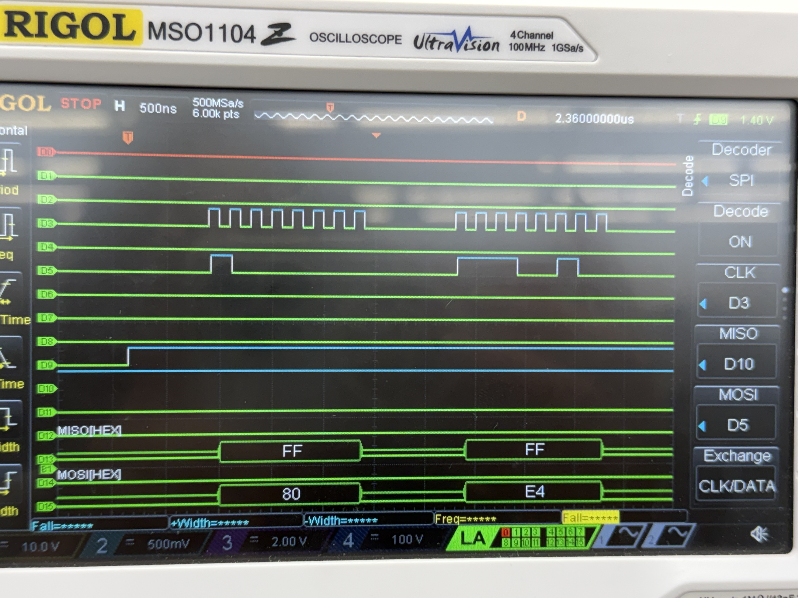
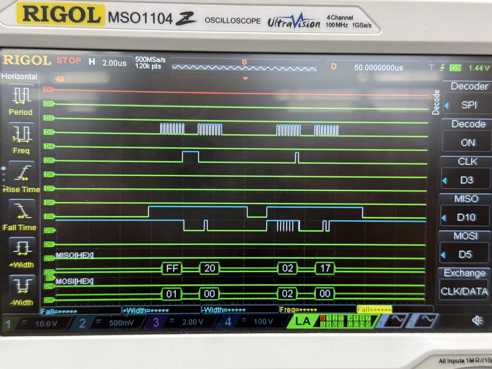
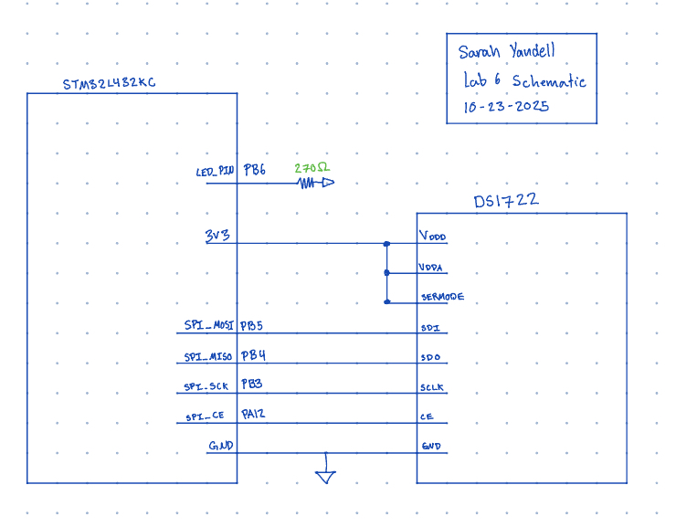
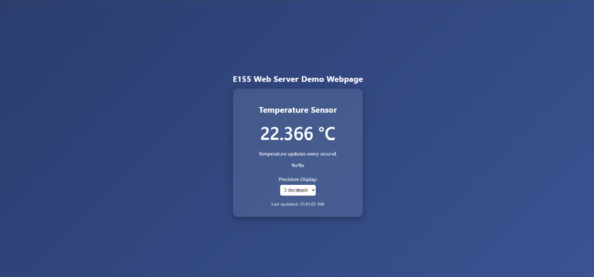
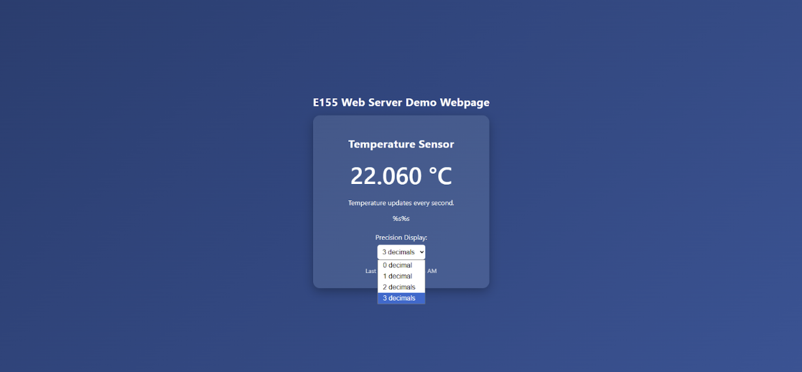

E155 Lab 6 Page
Lab 6: The Internet of Things and Serial Peripheral Interface
Introduction
In this lab, I designed a simple IoT device that serves a web UI over WiFi to control an LED and read room temperature. An ESP8266 hosts the HTTP server, the STM32L432KC MCU provides the HTML content over a 125000‑baud UART link, the MCU controls an LED via GPIO, and works with a DS1722 digital thermometer via SPI. The page lets a user toggle the LED and select DS1722 conversion resolution (8–12 bits) while displaying live temperature in °C.
Design and Testing Methodology
The ESP8266 is powered at 5 V and connected to the MCU’s USART1 with TX/RX. The WiFi access point is at http://192.168.4.1/. The DS1722 on an SOIC‑8 breakout is wired for SPI with CE on PA12, SCK on PB3, SDO on PB4 (MCU MISO), and SDI on PB5 (MCU MOSI), power is 3.3 V with a common ground, and an LED is connected on PB6.
The UART runs at 125000 baud. The MCU generates the entire HTML page header, controls (LED on/off and resolution 8–12), status/temperature, and footer. SPI1 is configured with CPOL=0 and CPHA=1 at BR=0b011 (fclk/16 ≈ 1 MHz). The DS1722 initializes to 9‑bit conversion (0xE2), and resolution changes map to configuration writes (8→0xE0, 9→0xE2, 10→0xE4, 11→0xE6, 12→0xE8). Temperature is read by fetching the LSB (0x01) then MSB (0x02), combining into a 16‑bit signed value, and converting to °C as raw/256.
Testing I verified the SPI worked with a logic analyzer

Figure 1 shows the DS1722 write functionality.

Figure 2 shows the DS1722 read (addr 0x01 then 0x02) Then I verified the website and other functionality, such as UART and led, were working by displaying information on the website
Technical Documentation
The source code for the project can be found in the associated Github repository.
Schematic

Figure 3 shows the wiring for the ESP8266 UART link, DS1722 SPI, and LED. The LED is connected with a 270 resistor.
Result and Discussion
The system meets the lab requirements: an ESP8266 hosted webpage controls an MCU LED and displays DS1722 temperature over an SPI. Logic‑analyzer verification ensured correct SPI. The system was fast. It is able to constantly update temperatures and change resolution.
Conclusion
An ESP8266 hosted webpage that controls an MCU LED and displays DS1722 temperature with resolution control over an SPI was made. I spent approximately 17 hours completing this lab.
AI Prototype Summary
I put the first prompt in and got:
char* webpageAI = "<!DOCTYPE html>\
<html lang=\"en\">\
<head>\
<meta charset=\"UTF-8\" />\
<meta name=\"viewport\" content=\"width=device-width, initial-scale=1.0\" />\
<title>Temperature Sensor Portal</title>\
<style>\
body {font-family: 'Segoe UI', Roboto, sans-serif; background: linear-gradient(135deg, #1e3c72, #2a5298); color: #fff; display: flex; flex-direction: column; align-items: center; justify-content: center; height: 100vh; margin: 0;}\
.container {background: rgba(255,255,255,0.1); padding: 2rem 3rem; border-radius: 16px; box-shadow: 0 8px 25px rgba(0,0,0,0.3); text-align: center; width: 320px;}\
h1 {margin-bottom: 1rem; font-size: 1.6rem; letter-spacing: 0.5px;}\
.temp-display {font-size: 3.5rem; margin: 1.2rem 0; font-weight: 600;}\
.controls {margin-top: 1.5rem;}\
.precision-control {margin-top: 1.5rem; display: flex; flex-direction: column; align-items: center;}\
select {margin-top: 0.5rem; padding: 0.5rem; border-radius: 6px; border: none; font-size: 1rem;}\
.status {margin-top: 1rem; font-size: 0.9rem; opacity: 0.8;}\
</style>\
</head>\
<body>\
<div class=\"container\">\
<h1>Temperature Sensor</h1>\
<div id=\"temp\" class=\"temp-display\">-- °C</div>\
<p>Temperature updates every second.</p>\
<!-- LED Control -->\
%s\
<!-- Resolution Control -->\
%s\
<div class=\"precision-control\">\
<label for=\"precision\">Precision Display:</label>\
<select id=\"precision\">\
<option value=\"0\">0 decimal</option>\
<option value=\"1\" selected>1 decimal</option>\
<option value=\"2\">2 decimals</option>\
<option value=\"3\">3 decimals</option>\
</select>\
</div>\
<div class=\"status\" id=\"status\">Connecting to sensor...</div>\
</div>\
<script>\
let currentTemp = 22.5;\
const tempDisplay = document.getElementById('temp');\
const precisionSelect = document.getElementById('precision');\
const statusText = document.getElementById('status');\
setInterval(() => {\
currentTemp += (Math.random() - 0.5) * 0.2;\
updateDisplay();\
}, 1000);\
precisionSelect.addEventListener('change', updateDisplay);\
function updateDisplay() {\
const precision = parseInt(precisionSelect.value);\
tempDisplay.textContent = currentTemp.toFixed(precision) + ' °C';\
statusText.textContent = 'Last updated: ' + new Date().toLocaleTimeString();\
}\
updateDisplay();\
statusText.textContent = 'Sensor connected ✅';\
</script>\
</body>\
</html>";I added this to my code and got this:


The website worked very well. It was able to update constantly and had the option to show the different resolutions, though it was missing the 12 bit resolution. It also looked very nice.
I put the second prompt in and got:
int main(void)
{
SystemCoreClockUpdate();
SPI1_Init();
while (1)
{
float tempC = DS1722_ReadTemperature();
// e.g., printf("Temp: %.2f°C\n", tempC);
}
}
void SPI1_Init(void)
{
// Enable clocks
RCC->AHB2ENR |= RCC_AHB2ENR_GPIOAEN;
RCC->APB2ENR |= RCC_APB2ENR_SPI1EN;
// Configure PA5=SCK, PA6=MISO, PA7=MOSI as AF5
GPIOA->MODER &= ~(GPIO_MODER_MODE5_Msk | GPIO_MODER_MODE6_Msk | GPIO_MODER_MODE7_Msk);
GPIOA->MODER |= (0x2 << GPIO_MODER_MODE5_Pos) | (0x2 << GPIO_MODER_MODE6_Pos) | (0x2 << GPIO_MODER_MODE7_Pos);
GPIOA->AFR[0] |= (5 << GPIO_AFRL_AFSEL5_Pos) | (5 << GPIO_AFRL_AFSEL6_Pos) | (5 << GPIO_AFRL_AFSEL7_Pos);
// Configure PA4 as CS (manual control)
GPIOA->MODER &= ~GPIO_MODER_MODE4_Msk;
GPIOA->MODER |= (0x1 << GPIO_MODER_MODE4_Pos); // Output
DS1722_CS_High();
// Reset SPI and configure
DS1722_SPI->CR1 = 0;
DS1722_SPI->CR1 |= SPI_CR1_MSTR; // Master mode
DS1722_SPI->CR1 |= SPI_CR1_BR_1; // Baud rate = fPCLK/8 (adjust as needed)
DS1722_SPI->CR1 |= SPI_CR1_SSM | SPI_CR1_SSI; // Software slave management
DS1722_SPI->CR1 |= SPI_CR1_SPE; // Enable SPI
}
#include "stm32l4xx.h"
#include <stdint.h>
// Define SPI and Chip Select GPIO
#define DS1722_SPI SPI1
#define DS1722_CS_PORT GPIOA
#define DS1722_CS_PIN (1U << 4) // Example: PA4
static inline void DS1722_CS_Low(void) { DS1722_CS_PORT->BSRR = (uint32_t)(DS1722_CS_PIN << 16); }
static inline void DS1722_CS_High(void) { DS1722_CS_PORT->BSRR = DS1722_CS_PIN; }
// Helper to transmit/receive one byte over SPI (blocking)
static uint8_t SPI_TransmitReceive(uint8_t data)
{
while (!(DS1722_SPI->SR & SPI_SR_TXE)) {} // Wait TX empty
*((__IO uint8_t*)&DS1722_SPI->DR) = data; // Write to data register
while (!(DS1722_SPI->SR & SPI_SR_RXNE)) {} // Wait RX not empty
return *((__IO uint8_t*)&DS1722_SPI->DR); // Read received byte
}
/**
* @brief Read temperature from DS1722 sensor via SPI.
* @return Temperature in °C (float)
*/
float DS1722_ReadTemperature(void)
{
uint8_t msb, lsb;
int16_t raw;
// Pull CS low to start SPI transaction
DS1722_CS_Low();
// Send Read Temperature MSB command (0x80)
SPI_TransmitReceive(0x80);
msb = SPI_TransmitReceive(0xFF); // dummy write to read MSB
// Send Read Temperature LSB command (0x81)
SPI_TransmitReceive(0x81);
lsb = SPI_TransmitReceive(0xFF); // dummy write to read LSB
// Release chip select
DS1722_CS_High();
// Combine bytes and align bits
raw = ((int16_t)msb << 8) | lsb;
raw >>= 3; // 13-bit data is left-aligned, so shift right 3 bits
// Convert to Celsius (0.0625°C per bit)
float temperature = (float)raw * 0.0625f;
return temperature;
}It did not initially compile so I did some editing to get it to work with my existing code and it compiled but did not give back any values.
I think that for the website code the AI did very well. It worked well and looked good. There were only small things missing and I think they would be easy fixes to put in manually. The AI code for writing c code was wrong and even after some edits from me it did not work properly so I would not recommend that functionality.